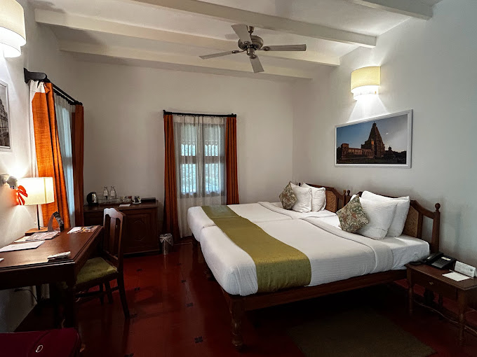
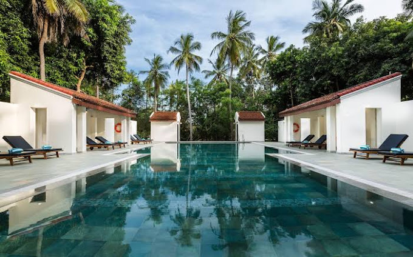
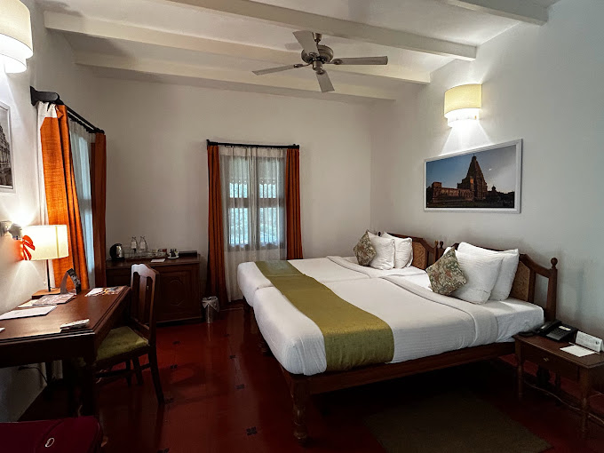
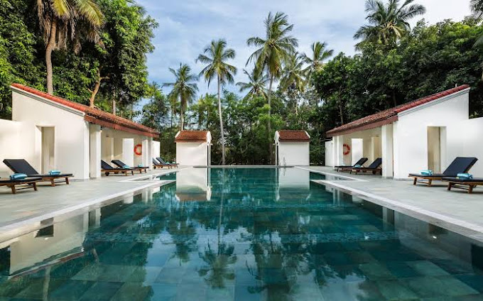

Mantra Koodam
Experience World-class Service at Mantra Koodam Kumbakonam - a CGH Earth Experience This eco-friendly hotel enjoys a scenic location between the Veera Chozha and Cauverey Rivers in Southern India's Tanjore District. Offering free Wi-Fi, Mantra Koodam also has Ayurvedic spa treatments and yoga sessions. Surrounded by herbal gardens, elegant cottages and villas come with both air conditioning and ceiling fans. A mini-bar is included. Attached bathrooms come with a rainshower. Presenting wellness and peace, Mantra Koodam is within 3.7 mi from Uppiliyappan Temple and Kumbakonam Railway Station. Free parking is available. Afternoons can be spent swimming in the outdoor natural pool, enjoying a nature walk or going bird watching. For guests' convenience, the resort has laundry services and car rentals. Anna Prasanna restaurant serves vegetarian and non-vegetarian cuisines prepared in a traditional healthy style